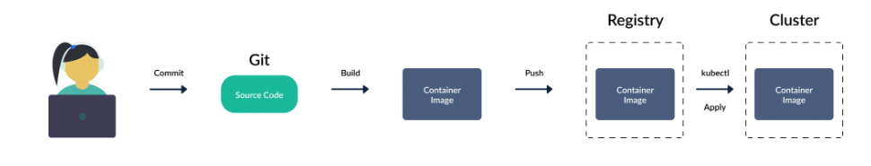
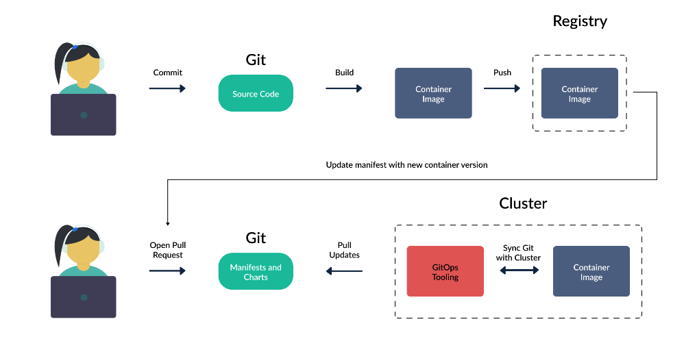

MAY THE FORCE BE WITH YOU

Introdução
É inegável o fato de que hoje temos fácil acesso a informações valiosas quando decidimos aprender uma nova técnica ou ferramenta. As documentações, fóruns, webnars, cursos, são fontes ricas de conhecimento teórico essencial para construir uma base sólida sob o objeto de estudo. Entretanto, é muito comum que no início dos estudos, de forma geral, nos atenhamos ao aprendizado do conhecimento explícito ( Aquele que é derivado de linguagem formal e sistemática ), e o conhecimento tácito ( Aquele obtido através da experiência ) é tido como algo possível de se obter apenas quando realmente estiver utilizando a ferramenta profissionalmente.
Essa afirmação pode ser válida em diversas áreas do conhecimento, porém na computação, pelos benefícios que temos em conseguir replicar, simular e virtualizar cenários, a experiência na utilização de certos recursos pode ser obtida através de projetos pessoais, desde que esses projetos tragam desafios similares aos enfrentados nos ambientes produtivos. E é justamente esse o objetivo deste livro, trazer cenários de casos de uso reais de quando se adota GitOps.
O que se propõe com essa metodologia de estudo vai além de apenas disponibilizar materiais de estudos compilados, referências e vários arquivos yaml para que você suba um cluster com alguns serviços. A proposta final é que você conheça os verdadeiros desafios que só são vistos depois que os seus serviços estão executando em produção, alinhando teoria e prática para que você possa construir o conhecimento tácito relevante sobre o que é e como usar GitOps no cenário que for preciso.
Sem mais delongas, espero que este conteúdo te ajude a entender um pouco mais sobre GitOps. Sinta-se livre para contribuir com sugestões, melhorias e correções tanto dos conteúdos quanto dos exemplos que estão neste repositório.
Vamos começar?

Capítulo 1
O que é GitOps?
Sabe quando você coloca uma panela de angu com queijo na geladeira e outra pessoa come?
Imagina como seria bom se mesmo quando outra pessoa comesse ela voltasse automagicamente pra geladeira da mesma forma que você deixou. De forma muito simplificada este é um dos benefícios ao utilizar GitOps.
Obviamente GitOps é um tema que aborda mais princípios do que essa analogia em si retrata, porém ela é um bom norte para entender os seus benefícios. Nos parágrafos seguintes você possivelmente irá entender melhor o que a analogia do angu com queijo quer dizer.
Os princípios do GitOps são:
-
Um sistema gerenciado por GitOps deve ser descrito de forma totalmente declarativa ( Infraestrutura e Aplicação )
-
O estado desejado do sistema é versionado no Git
-
Mudanças aprovadas são automaticamente aplicadas
-
Agentes devem garantir sincronismo contínuo entre o ambiente criado e o estado desejado
Vamos ver com um pouco mais de detalhe cada um desses pontos.
Declarativo
O princípio básico do GitOps é que toda aplicação e componentes necessários para sua execução devem estar descritos via Git. O estado desejado deve ser aquele que está no repositório Git.
Versionado e imutável
Um commit do git é uma excelente forma de se ter um snapshot imultável de toda uma hierarquia de arquivos, e isso o torna o armazenamento ideal para se utilizar em GitOps. Toda alteração feita no git automaticamente substitui todo o estado anterior ao invés de somente realizar apenas uma mudança, e sempre que essa substituição acontece é criada uma nova versão do estado.

Pull automático
O caminho típico de uma atualização de ambiente é que o desenvolvedor faça um commit e envie as modificações para produção.

Porém com GitOps o caminho é o contrário. Em GitOps existe um agente que intermedia a interação entre o repositório git e o ambiente de produção, onde esse agente escuta por qualquer alteração no repositório da aplicação e mescla essas atualizações no ambiente de produção.

Continuamente sincronizado
Mudanças nos sistemas são constantes, e com isso existe a necessidade de se validar continuamente o estado das aplicações em produção para que elas reflitam o que está descrito no git.

O agente de GitOps é responsável por monitorar de tempos em tempos o estado das aplicações no ambiente de produção e comparar com o estado desejado armazenado no git. Essa ação automática de sincronismo além de evitar a persistência de alterações feitas diretamente no ambiente de produção nos dá a garantia de que para saber o que está sendo executado em produção basta olhar o que está no git.
Quando houver diferença entre o estado desejado e o ambiente de produção, eu vou estar lá.
Casos de uso
Prós e contras
Preparando ambiente de estudo
Referências e recomendações
Este primeiro capítulo foi baseado no conteúdo gratúito do curso GitOps Fundamentals disponibilizado pela Codefresh.
Você também pode encontrar bastante informação sobre GitOps no site da Open GitOps